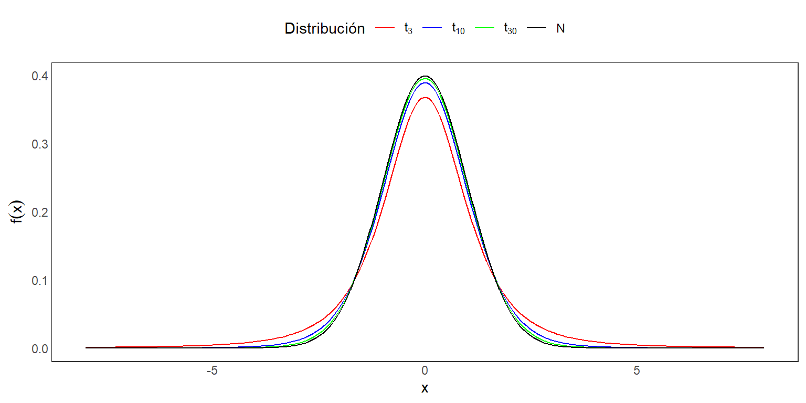
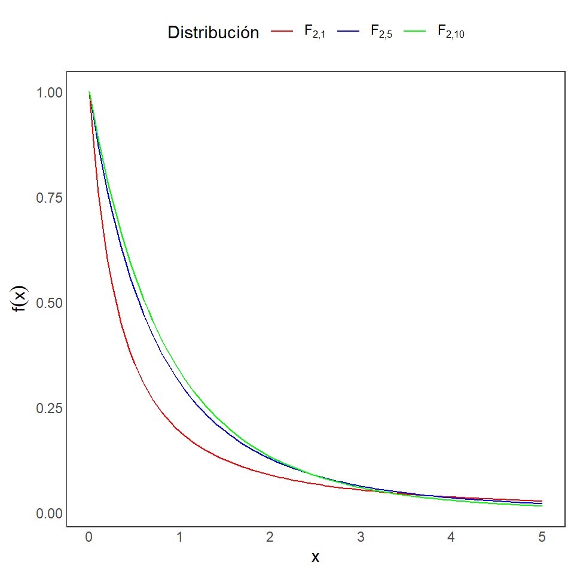
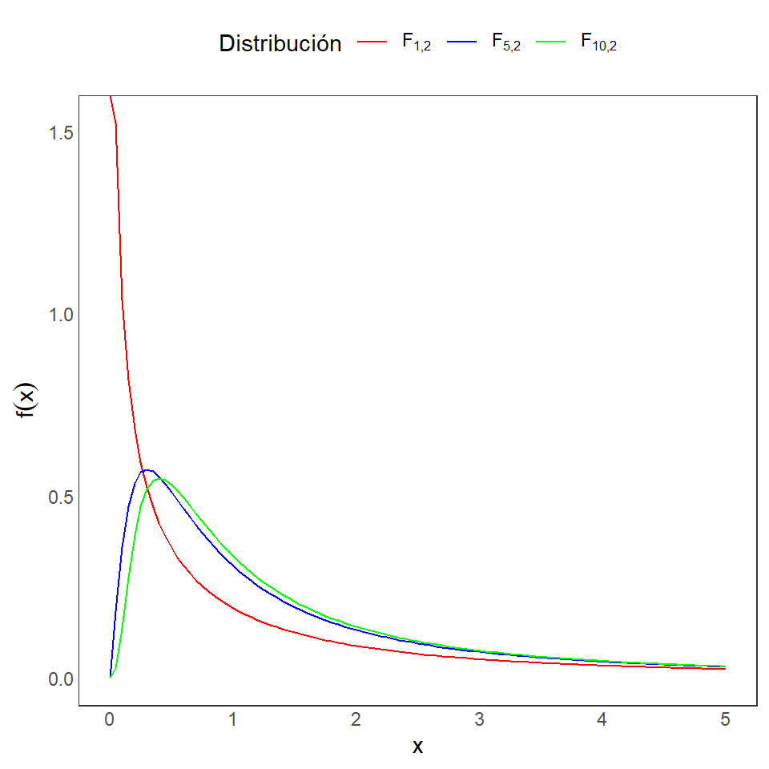
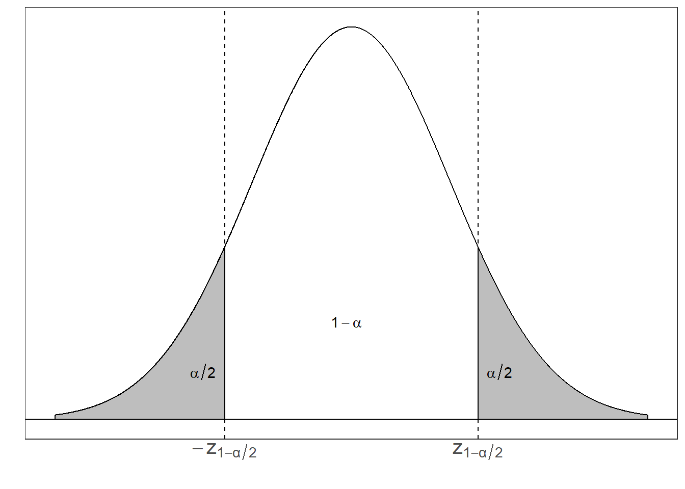
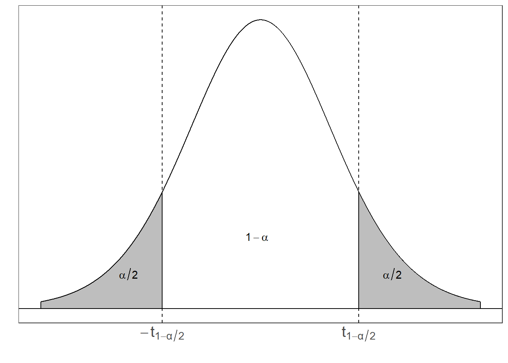

XS-0122 Fundamentos de Teoría Estadística - I Semestre 2026
Basada en las presentaciones de Shu Wei Cho
Distribución de t-Student
Distribución F de Fisher
Definición 3.2: Sean dos variables aleatorias independientes X y Y, tal que \(X \sim N(0,1)\) y \(Y \sim \chi^2_{m}\). Defina:
\[T=\frac{X}{\sqrt{\frac{Y}{m}}}.\] La distirbución de \(T\) se llama una distribución t-Student con \(m\) grados de libertad, y se denota como \(t_m\).
La función de densidad es: \[f(x|m)= \frac{\Gamma\left(\frac{m+1}{2}\right)}{(m\pi)^{1/2}\Gamma(\frac{m}{2})}\left(1+\frac{x^2}{m}\right)^{\frac{-(m+1)}{2}},~~~ -\infty<x<\infty.\]

Definición 3.3: Sean dos variables aleatorias independientes X y Y, tal que \(X \sim \chi^2_{m}\) y \(Y \sim \chi^2_{n}\), con \(m\) y \(n\) enteros positivos. Defina:
\[F=\frac{\frac{X}{m}}{\frac{Y}{n}}.\] La distirbución de \(F\) se llama una distribución F con \(m\) y \(n\) grados de libertad, y se denota como \(F_{m,n}\).
La función de densidad es: \[f(x|m,n)= \frac{\Gamma\left(\frac{m+n}{2}\right) m^{m/2}n^{n/2}}{\Gamma(\frac{m}{2})\Gamma(\frac{n}{2})} \frac{x^{m/2-1}}{(mx+n)^{(m+n)/2}},~~~ 0<x,\] y \(f(x|m,n)=0\) para \(x\leq 0\).


Teorema 3.1:
Si \(X\) tiene una distribución \(F\) con \(m\) y \(n\) grados de libertad, entonces \(Y=1/X\) también tiene una distribución \(F\) con \(n\) y \(m\) grados de libertad.
Si \(X\) tiene una distribución t con \(m\) grados de libertad, entonces \(X^2\) tiene una distribución \(F\) con \(1\) y \(m\) grados de libertad.
Sea \(X_{1}, X_{2}, ... , X_{n}\) una muestra aleatoria de una población Normal con media \(\mu\) y variancia \(\sigma^2\), donde \(\mu\) es desconocido pero \(\sigma^2\) es conocido. Vamos a construir un intervalo de confianza bilateral para \(\mu\) con probabilidad \(1-\alpha\).
Comosidere el pivote a \(Z = \dfrac{\bar{X} - \mu}{\dfrac{\sigma}{\sqrt{n}}}\), ya que \(Z \sim N(0,1)\). Luego procedemos a encontrar los valores \(a\) y \(b\) que satisfacen \(P(a \leq Z \leq b) = 1-\alpha\) y \(P(Z < a) = P(Z > b) = \frac{\alpha}{2}\).
Tenemos que
\(P(z_{\frac{\alpha}{2}} \leq Z \leq z_{1-\frac{\alpha}{2}}) = 1-\alpha\)

\[= P\left( \bar{X} - z_{1-\frac{\alpha}{2}} \dfrac{\sigma}{\sqrt{n}} \leq \mu \leq \bar{X} + z_{1-\frac{\alpha}{2}} \dfrac{\sigma}{\sqrt{n}} \right) = 1-\alpha\]
\[T = \dfrac{\bar{X} - \mu}{\dfrac{s}{\sqrt{n}}}\]

\[P(a \leq T \leq b) =P(t_{\frac{\alpha}{2},n-1} \leq T \leq t_{1-\frac{\alpha}{2},n-1}) = P\left(-t_{1-\frac{\alpha}{2},n-1} \leq \dfrac{\bar{X} - \mu}{\dfrac{S}{\sqrt{n}}} \leq t_{1-\frac{\alpha}{2},n-1} \right).\]
Si despejamos el valor de \(\mu\), obtenemos el intervalo \(\bar{X} \pm t_{\frac{\alpha}{2}, n-1} \dfrac{s}{\sqrt{n}}\).
Por lo tanto podemos concluir que con una confianza del \((1-\alpha)\%\) el intervalo \(\bar{X} \pm t_{1-\frac{\alpha}{2}, n-1} \dfrac{s}{\sqrt{n}}\) contiene el verdadero valor de \(\mu\).
Ahora supongamos que tenemos dos poblaciones normales e independientes y que obtenemos una muestra de cada una.
Sean \(X_{1}, X_{2}, ... , X_{n}\) y \(Y_{1}, Y_{2}, ... , Y_{m}\) estas dos muestras aleatorias, tal que \(X_{j} \sim N(\mu_{1}, \sigma^{2}_{1})\) y \(Y_{i} \sim N(\mu_{2}, \sigma^{2}_{2})\), donde \(\mu_{1}\) y \(\mu_2\) son parámetros desconocidos y \(\sigma^{2}_{1}\) y \(\sigma^{2}_{2}\) son parámetros conocidos. Nos interesa construir un intervalo bilateral, con una confianza del \((1-\alpha)\%\), para \(\mu_{1} - \mu_{2}\).
Recordemos que \(\bar{X} \sim N\left(\mu_{1}, \dfrac{\sigma^{2}_{1}}{n}\right)\) y \(\bar{Y} \sim N\left(\mu_{2}, \dfrac{\sigma^{2}_{2}}{m}\right)\). Además, \(\bar{X} - \bar{Y}\) se distribuye Normal con media \(\mu_{1} - \mu_{2}\) y variancia \(\dfrac{\sigma^{2}_{1}}{n} + \dfrac{\sigma^{2}_{2}}{m}\).
Estandarizando dicha variable, tenemos un pivote:
\[Z = \dfrac{(\bar{X} - \bar{Y}) - (\mu_{1} - \mu_{2})}{\sqrt{\dfrac{\sigma^{2}_{1}}{n} + \dfrac{\sigma^{2}_{2}}{m}}}\]
\[P(a \leq Z \leq b) = P\left(-z_{1-\frac{\alpha}{2}} \leq \dfrac{(\bar{X} - \bar{Y}) - (\mu_{1} - \mu_{2})}{\sqrt{\dfrac{\sigma^{2}_{1}}{n} + \dfrac{\sigma^{2}_{2}}{m}}} \leq z_{1-\frac{\alpha}{2}} \right)=1-\alpha.\]
Nota: Si fuese el caso donde las variancias poblaciones son iguales (i.e. \(\sigma^{2}_{1} = \sigma^{2}_{2} = \sigma^{2}\)) Entonces podriamos escribir el intervalo como:
\[(\bar{X} - \bar{Y}) \pm z_{1-\frac{\alpha}{2}} \cdot \sigma \sqrt{\dfrac{1}{n} + \dfrac{1}{m}}.\]
¿Por qué es importante el supuesto de homoscedasticidad (\(\sigma^{2}_{1} = \sigma^{2}_{2} = \sigma^{2}\))? Para poder encontrar un pivote satisfactorio.
Considere \[T = \dfrac{Z}{\sqrt{\dfrac{W}{v}}}\] donde \(Z \sim N(0,1)\) y \(W \sim \chi^{2}_{(v)}\). Para este caso podemos usar la misma \(Z\) que usamos anteriormente:
\[Z = \dfrac{(\bar{X} - \bar{Y}) - (\mu_{1} - \mu_{2})}{\sigma \sqrt{\dfrac{1}{n} + \dfrac{1}{m}}}\]
\[W = \dfrac{(n-1)S^{2}_{1} + (m-1)S^{2}_{2} }{\sigma^{2}} \sim \chi^{2}_{(n+m-2)}\]
Si procedemos a dividir esta ji-cuadrado entre sus grados de libertad obtenemos: \[\dfrac{W}{v} = \dfrac{(n-1)S^{2}_{1} + (m-1)S^{2}_{2} }{\sigma^{2}(n+m-2)}\]
\[T = \dfrac{(\bar{X} - \bar{Y}) - (\mu_{1} - \mu_{2})}{S_{p} \sqrt{\dfrac{1}{n} + \dfrac{1}{m}}}\]
Esta es una t-student con \(n+m-2\) grados de libertad y la podemos usar como pivote pues cumple todas las condiciones y ya no está en términos de parámetros desconocidos.
El procedimiento a seguir es similar al otro caso donde teniamos una t-student y luego de desarrollarlo obtenemos el intervalo
\[\displaystyle (\bar{X} - \bar{Y}) \pm t_{1-\frac{\alpha}{2}, n+m-2} \cdot S_{p} \sqrt{\frac{1}{n} + \dfrac{1}{m}}\]
Concluimos que con una probabilidad de \(1-\alpha\) el intervalo \((\bar{X} - \bar{Y}) \pm t_{1-\frac{\alpha}{2}, n+m-2} \cdot S_{p} \sqrt{\frac{1}{n} + \frac{1}{m}}\) contiene el verdadero valor de \(\mu_{1} - \mu_{2}\).
En los ejercicios 9.8 y 9.9 de Casella y Berger, se utiliza la siguiente tabla para clasificar las funciones de densidad según forma. En esta tabla se refieren a la mayoría de distribuciones de la familia Exponencial, en las cuales la función de densidad se puede reescribir siguiendo la forma de la primera columna.
| Forma | Tipo | Pivote |
|---|---|---|
| \(f(x-\mu)\) | Posición | \(\bar{X}-\mu\) |
| \(\dfrac{1}{\sigma}f(x/\sigma)\) | Escala | \(\dfrac{\bar{X}}{\sigma}\) |
| \(\dfrac{1}{\sigma}f\left( \dfrac{x-\mu}{\sigma}\right)\) | Posición-Escala | \(\dfrac{\bar{X}-\mu}{S}\) |
Para entender las 3 formas, veamos los siguientes ejemplos:
Sea \(X \sim N(\mu, 1)\), entonces la función de densidad es:
\[f(x) = \dfrac{1}{\sqrt{2\pi}} e^{\dfrac{-1}{2}(x-\mu)^2} = g(z)\] en donde \(z = x-\mu\), y \(g(z)=\dfrac{1}{\sqrt{2\pi}} e^{\dfrac{-1}{2}z^2}\).
Sea \(X \sim N(0, \sigma^2)\), entonces la función de densidad es:
\[f(x) = \dfrac{1}{\sigma}\dfrac{1}{\sqrt{2\pi}} e^{\dfrac{-1}{2}(x/\sigma)^2} = \dfrac{1}{\sigma} g(z)\] en donde \(z = x/\sigma\), y \(g(z)=\dfrac{1}{\sqrt{2\pi}} e^{\dfrac{-1}{2}(z)^2}\).
Sea \(X \sim N(\mu, \sigma^2)\), entonces la función de densidad es:
\[f(x) = \dfrac{1}{\sigma}\dfrac{1}{\sqrt{2\pi}} e^{\dfrac{-1}{2}\left(\dfrac{x-\mu}{\sigma}\right)^2} = \dfrac{1}{\sigma} g(z)\] en donde \(z = \dfrac{x-\mu}{\sigma}\), y \(g(z)=\dfrac{1}{\sqrt{2\pi}} e^{\dfrac{-1}{2}(z)^2}\).
Ejemplo: Se toma el tiempo en milisegundos para que los nervios se recuperen después de administrar una droga a 4 ratones: \(1.7, 1.6, 1.8, 1.9\). Suponga que la población es nornal, entonces calcule un intervalo de confianza para el promedio este tiempo a un 90% de confianza.
Solución: Para este caso tenemos que \(\bar{X} = 1.75\) y \(S^{2} = 0.017\) y \(S = \sqrt{0.017} = 0.13\).
En este caso vamos a tomar una \(t_{0.95,3} = 2.353 \ (\alpha/2 = 0.1/2 = 0.05\))
\[\begin{align*} & P\left(\bar{X}- t_{0.95,3} \cdot \frac{s}{\sqrt{4}} \leq \mu \leq \bar{X}+ t_{0.95,3} \cdot \frac{s}{\sqrt{n}}\right) \\ & = P\left(1.75- 2.353 \cdot \frac{0.13}{2} \leq \mu \leq 1.75+ 2.353 \cdot \frac{0.13}{2} \right) \\ &= P\left(1.597 \leq \mu \leq 1.903 \right) = 0.9. \end{align*}\]
Por lo que, con una confianza del 90%, el intervalo \([1.597, 1.903]\) contiene al verdadero valor de \(\mu\).
Ejemplo: En un hospital se realiza un estudio sobre la influencia del estrés en el peso de los bebés al nacer. Se consideran dos grupos de mujeres embarazadas: aquellas que viven en el campo y aquellas que viven en la ciudad, y se obtienen los siguientes datos sobre el peso de sus hijos.
\[\begin{equation*} \begin{array}{|c|c||c|c|} \hline & \text { Muestra } & \begin{array}{c} \text { Peso medio } \\ \text { de los bebés } \end{array} & \begin{array}{c} \text { Desviación } \\ \text { estándar } \end{array} \\ \hline \text { campo } & \mathrm{n}_{1}=320 & \overline{\mathrm{X}}_{1}=3.8 & \sigma_{1}=0.6 \\ \hline \text { ciudad } & \mathrm{n}_{2}=240 & \overline{\mathrm{X}}_{2}=3.4 &\sigma_{2}=0.8 \\\hline\end{array}\end{equation*}\]
Asumiendo que los datos son normales, determine cómo influye que la madre viva en el campo o en la ciudad en el peso de su hijo al nacer, utilizando un intervalo de confianza para la diferencia de medias con un nivel de confianza del 95%.
Solución:
Intervalo de confianza del \(95 \%\) :
\(1-\alpha=0.95 \Rightarrow \alpha=1-0,95=0,05\)
Buscamos en el la tabla de normales aquel valor que cumpla \(P(Z\leq z_{1-\alpha / 2}) = 1-0.05/2 = 0.975\)
Obtenemos que \(\Rightarrow z_{1-\alpha / 2}=z_{0.975}=1.96\)
\[\begin{align*}&\left(\left(\overline{\mathrm{X}}_{1}-\overline{\mathrm{X}}_{2}\right)-z_{1-\alpha / 2}\sqrt{\frac{\sigma_{1}^{2}}{\mathrm{n}_{1}}+\frac{\sigma_{2}^{2}}{\mathrm{n}_{2}}},\left(\overline{\mathrm{X}}_{1}-\overline{\mathrm{X}}_{2}\right)+z_{1-\alpha / 2}\sqrt{\frac{\sigma_{1}^{2}}{\mathrm{n}_{1}}+\frac{\sigma_{2}^{2}}{\mathrm{n}_{2}}}\right)\\&=\left((3.8-3.4)-1.96 \sqrt{\frac{0.6^{2}}{320}+\frac{0.8^{2}}{240}},(3.8-3.4)+1.96\sqrt{\frac{0.6^{2}}{320}+\frac{0.8^{2}}{240}}\right)\\&=[0.279,0.520]\end{align*}\]
Nos interesa constuir un intervalo de confianza de probabilidad \(1-\alpha\) para la variancia poblacional, \(\sigma^2\).
En este caso nuestra población sigue siendo Normal con parámetros \(\mu\) y \(\sigma^2\), donde ambos parámetros son desconocidos.
Considere la variable pivote:
\[U = \frac{(n-1)S^{2}}{\sigma^2}\]
Sabemos que \(U \sim \chi^{2}_{(n-1)}\). Por lo tanto esta variable aleatoria cumple todas las condiciones necesarias para ser un pivote.
Ahora debemos encontrar los valores de \(a\) y \(b\) tales que:
\[P(U < a) = \frac{\alpha}{2} \qquad P(U > b) = \frac{\alpha}{2}.\]
\[P(a \leq U \leq b) = P\left( \chi^{2}_{\frac{\alpha}{2}, n-1} \leq U \leq \chi^{2}_{1-\frac{\alpha}{2}, n-1} \right) = 1 -\alpha.\] - Ahora despejamos \(\sigma^2\):
\[\begin{align*}P(a \leq U \leq b) &= P\left( \chi^{2}_{\frac{\alpha}{2}, n-1} \leq\frac{(n-1)S^{2}}{\sigma^2} \leq \chi^{2}_{\frac{1-\alpha}{2}, n-1} \right) \\ &= P\left( \frac{(n-1)S^{2}}{\chi^{2}_{1-\frac{\alpha}{2}, n-1}} \leq \sigma^2 \leq \frac{(n-1)S^{2}}{\chi^{2}_{\frac{\alpha}{2}, n-1}} \right) = 1 - \alpha\end{align*}\]
Ahora volvemos al caso donde tenemos dos poblaciones independientes, una de las cuales es \(N(\mu_{1}, \sigma^{2}_{1})\) y la otra es \(N(\mu_{2}, \sigma^{2}_{2})\). Supongase que se obtiene una muestra \(X_{1}, X_{2}, ... , X_{n}\) de la primera población y otra \(Y_{1}, Y_{2}, ... , Y_{m}\) de la segunda. Nuestro interés yace en encontrar una estimación por intervalo, con probabilidad \(1-\alpha\), para el parámetro \(\frac{\sigma^2_{1}}{\sigma^2_{2}}\).
Recordemos la forma de una distribución F: \[F =\frac{\frac{V}{v_1}}{\frac{W}{v_2}}\]
donde \(V \sim \chi^{2}_{(v_1)}\) y \(W \sim \chi^{2}_{(v_2)}\).
Sabemos de antemano que \(\frac{(n - 1)S^{2}_{1}}{\sigma^{2}_{1}} \sim \chi^{2}_{(n-1)}\) y \(\frac{(m - 1)S^{2}_{2}}{\sigma^{2}_{2}} \sim \chi^{2}_{(m-1)}\).
Podemos usar estas variables aleatorias en la construcción de una F que incluya el parámetro de interés: \[F = \frac{\frac{\frac{(n - 1)S^{2}_{1}}{\sigma^{2}_{1}}}{n-1}}{\frac{\frac{(m - 1)S^{2}_{2}}{\sigma^{2}_{2}}}{m-1}} = \frac{S^{2}_{1}}{S^{2}_{2}} \cdot \frac{\sigma^{2}_{2}}{\sigma^{2}_{1}} \sim F_{(n-1,m-1)}.\]
Esta variable aleatoria cumple todas las condiciones para ser un pivote y podemos usarla para encontrar los valores de \(a\) y \(b\).
\[P(a \leq F \leq b) = P\left( F_{\frac{\alpha}{2}, n-1,m-1} \leq F \leq F_{1-\frac{\alpha}{2}, n-1,m-1} \right)\] \[= P\left( F_{\frac{\alpha}{2}, n-1,m-1} \leq \frac{S^{2}_{1}}{S^{2}_{2}} \cdot \frac{\sigma^{2}_{2}}{\sigma^{2}_{1}} \leq F_{1-\frac{\alpha}{2}, n-1,m-1} \right)= 1 -\alpha.\]
\[\left[ \frac{\frac{S^{2}_{1}}{S^{2}_{2}}}{F_{1-\frac{\alpha}{2}, n-1, m-1}} , \frac{\frac{S^{2}_{1}}{S^{2}_{2}}}{F_{\frac{\alpha}{2}, n-1, m-1}} \right]\]
el cual incluye el valor de \(\frac{\sigma^{2}_{1}}{\sigma^{2}_{2}}\) con una confianza del \((1-\alpha)\%\).
Ejemplo: Un instituto de investigaciones agronómicas siembra, en cinco parcelas diferentes, dos tipos de maíz híbrido. Las producciones en quintales métricos por hectárea son:
\[\begin{equation*} \begin{array}{|l|c|c|c|c|c|} \hline \text{Tipo de maíz} & 1 & 2 & 3 & 4 & 5 \\ \hline \text { Híbrido I } & 90 & 85 & 95 & 76 & 80 \\ \hline \text { Híbrido II } & 84 & 87 & 90 & 92 & 90 \\ \hline \end{array} \end{equation*}\]
Construir un intervalo de confianza para el cociente de varianzas con una confianza de 0,9.
Solución: Asumiendo que las poblaciones son normales defina \(\mathrm{X}_{1}\equiv\) ‘Producción de maíz del híbrido I’ que sigue una \(\mathrm{N}\left(\mu_{1},\sigma_{1}^2\right)\) y \(\mathrm{X}_{2} \equiv\) ’ Producción de maíz del híbrido II’ que sigue una distribución \(\mathrm{N}\left(\mu_{2}, \sigma_{2}^2\right)\)
Entonces
Estimación por intervalos, método del pivote. Fórmulas para las estimaciones por intervalo más comunes (media, diferencias de medias, cociente de varianzas para distribuciones normales),
Intervalos de confianza para muestras grandes.